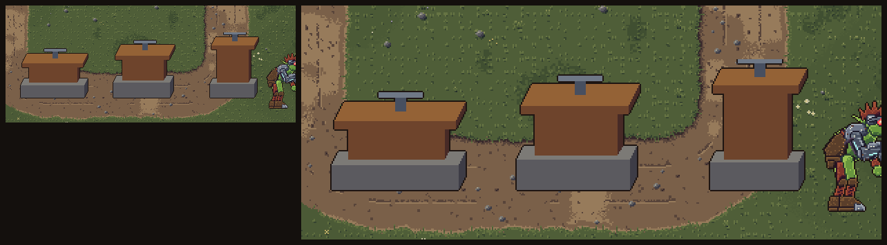
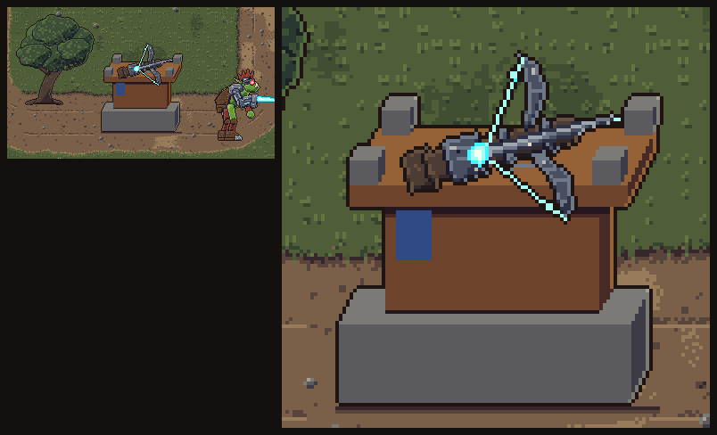
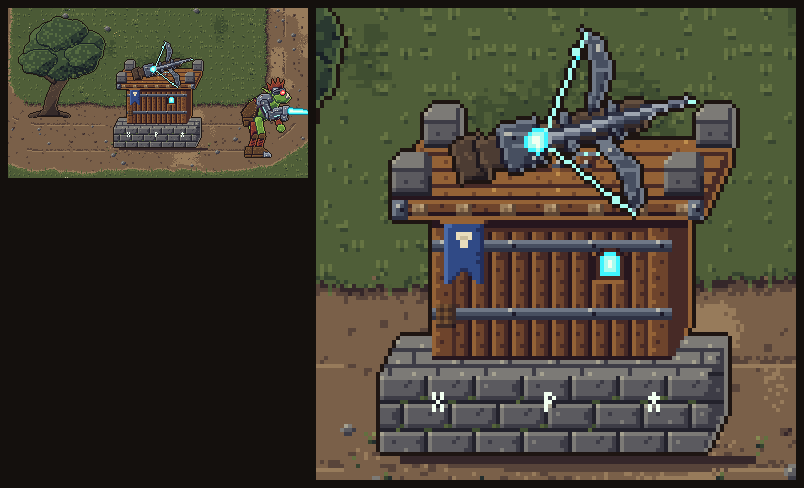
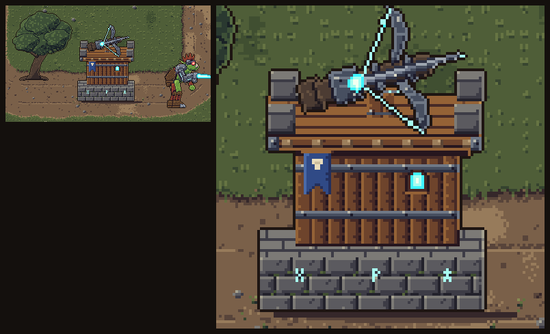

Gerado por npm run pixel. Cenário real do mapa 1 (chão, kit A, orc Saqueador). A animação repete a cada 9 s: materialização rúnica,
depois combate. A peça de cima é redesenhada em cada ângulo (sem rotação de imagem) e o recuo é em pixels inteiros.
Para testar no jogo: TOWER_VARIANT em src/config/art.js ou ?besta=a&catapulta=c na URL (padrão 'atual' = SVGs).
Madeira e pedra, besta mecânica no topo, arco com cordas de energia ciano. (T20: passada de acabamento — 3/4, texturas, idle.)
Nível 3: Rajada: segundo arco sobreposto; Perfurante: ponta de arpão de aço no trilho; Sentinela: luneta sobre a coronha
Nível 4: telhado de tábuas vira ninho coberto com bandeira; arco duplo (Rajada) / balestra pesada (Perfurante) / farol ciano no mastro (Sentinela)
T22: composta com peças desenhadas à mão (lib/materiais) em 4 etapas; pedra com rejunte, musgo e runas, corpo de tábuas com postes e cintas, piso com ameias, estandarte azul, janela ciano, suporte com anel rúnico.
Nível 3: Rajada: segundo arco sobre o suporte; Perfurante: ponta de arpão e cinta dupla na coronha; Sentinela: luneta e bandeirola no suporte
Nível 4: telhado de ardósia sobre as ameias; besta dupla (Rajada) / balestra de ferro (Perfurante) / farol rúnico na ameia de trás (Sentinela)
tools/pixel-art/rodadas/besta-autocritica.md)



Madeira e pedra, besta mecânica no topo, arco com cordas de energia ciano. (T20: passada de acabamento — 3/4, texturas, idle.)
Nível 3: Rajada: segundo arco sobreposto; Perfurante: ponta de arpão de aço no trilho; Sentinela: luneta sobre a coronha
Nível 4: telhado de tábuas vira ninho coberto com bandeira; arco duplo (Rajada) / balestra pesada (Perfurante) / farol ciano no mastro (Sentinela)
Madeira e pedra, besta mecânica no topo, arco com cordas de energia ciano. (T20: passada de acabamento — 3/4, texturas, idle.)
Nível 3: Rajada: segundo arco sobreposto; Perfurante: ponta de arpão de aço no trilho; Sentinela: luneta sobre a coronha
Nível 4: telhado de tábuas vira ninho coberto com bandeira; arco duplo (Rajada) / balestra pesada (Perfurante) / farol ciano no mastro (Sentinela)
Pedestal de pedra flutuando sobre runas, besta de metal escuro com cristal-mira ciano.
Nível 3: cristal-mira maior (Perfurante) / três cristais em leque (Rajada) / anel rúnico em volta do pedestal (Sentinela)
Nível 4: segundo bloco flutuante com runas acesas; besta ganha asas de metal e o cristal vira um prisma grande
Bunker compacto de aço rebitado, trilho de disparo de plasma e visor ciano.
Nível 3: cano duplo (Rajada) / trilho alongado com bobinas (Perfurante) / antena e luneta sobre o visor (Sentinela)
Nível 4: placas extras na base e escudo frontal; torre dupla com dois trilhos (Rajada) ou radar giratório (Sentinela)
T22: composta com peças desenhadas à mão (lib/materiais) em 4 etapas; pedra com rejunte, musgo e runas, corpo de tábuas com postes e cintas, piso com ameias, estandarte azul, janela ciano, suporte com anel rúnico.
Nível 3: Rajada: segundo arco sobre o suporte; Perfurante: ponta de arpão e cinta dupla na coronha; Sentinela: luneta e bandeirola no suporte
Nível 4: telhado de ardósia sobre as ameias; besta dupla (Rajada) / balestra de ferro (Perfurante) / farol rúnico na ameia de trás (Sentinela)
Catapulta clássica de madeira sobre rodas reforçadas com ferro; concha com orbe de plasma.
Nível 3: concha dupla (Fragmentação) / braço reforçado com cintas de ferro (Devastação) / tanque de ácido verde na traseira (Corrosão)
Nível 4: rodas trocadas por esteira de ferro; concha vira cesto de sub-bombas ou caldeirão corrosivo
Trabuco alto, braço longo e contrapeso de pedra rúnica brilhando.
Nível 3: contrapeso maior com mais runas (Devastação) / funda dupla (Fragmentação) / contrapeso rachado vazando energia (Corrosão)
Nível 4: estrutura dobrada com dois braços, ou contrapeso vira um cristal rúnico flutuante
Base de pedra e ferro com braço hidráulico e reator de plasma visível.
Nível 3: segundo pistão e reator maior (Devastação) / tambor de sub-bombas ao lado (Fragmentação) / tubos de ácido no braço (Corrosão)
Nível 4: chaminé de forja com fumaça ciano; braço duplo ou reator exposto em anel